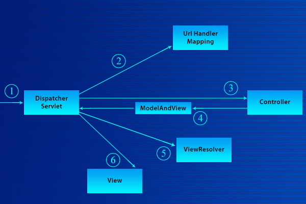
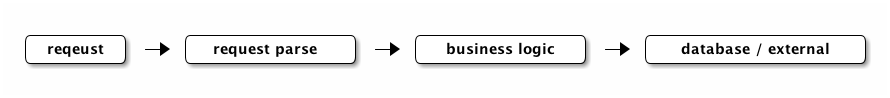
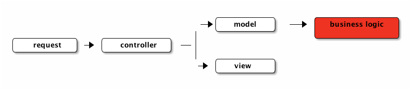
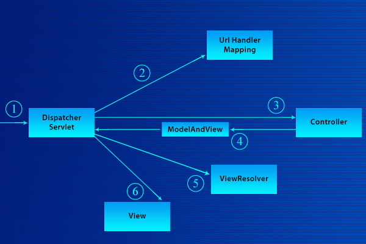

Spring 框架
spring是什么
Spring 是一个用java开发的轻量级web框架，使用di和aop技术构建。
spring 可打包为一个jar包，也可以使用其各个子包的形式。
结构
spring的结构如下：

spring mvc
spring mvc是对mvc模型的实现其一次请求处理过程如下：

本文主要记录我学习java的web开发和spring框架时对一些关键技术和概念的理解与记录。
待深入
Web服务模型概括为client/server模型，在server端，又可以有如下的模型：

MVC 是一种web设计的模式，将web服务拆分为3个模块：M（model），V（view），C（controller）。这种拆分是为了代码重用和解耦，提高灵活性。
在MVC的模型下，一个请求的处理过程如下：

业务逻辑代码的最终目标是为请求产生数据，通常作为model的后端。
在今天，web开发离不开web框架，web框架的好坏直接决定了web开发的质量和web服务的质量。
web 框架是运行于webserver内的一个容器，在这个容器里面运行着webapp。
web框架的作用是为web应用的开发提供一个环境，web应用的开发者只需要对此容易进行配置和使用，便可以完成许多web开发共性的需求，从而让web开发者将精力集中于web应用的开发上来。
web框架是MVC的实现者，web框架实现了MVC模型，约定了一定的目录结构，用于存放不同类型的文件和资源，web开发者使用web框架就需要遵循这样的约定。
web框架都完成了哪些功能？
web app是运行于web框架中的一段代码或类，实现上web app的代码一般继承web框架的某个类，实现具体的针对性的处理。
web app只关心请求的含义，即请求的业务逻辑层面的处理，通过各种途径和方式取得客户端希望的结果数据，然后返回给web框架。
Spring 是一个用java开发的轻量级web框架，使用di和aop技术构建。
spring 可打包为一个jar包，也可以使用其各个子包的形式。
spring的结构如下：
spring mvc是对mvc模型的实现其一次请求处理过程如下：

依赖注入是一种解耦方法，spring中的依赖注入通过定义XML方式来完成，大体思想是通过在XML中定义类之间的关系（如类A中有一个类B的属性），从而将这种具体的依赖关系剥离在代码外面。
然后在加载类的时候根据XML中的定义，将被依赖类注入到依赖者当中。
依赖注入是IoC的一种，对于被注入依赖的模块或者说类，它们只知道一个依赖的super class，而不知道具体被注入了什么实现（super class的子类），所以一部分的执行逻辑的控制权是取决于所注入的依赖的模块的。
spring 支持Di，而且是其最大特点。spring的依赖注入通过定义XML实现依赖关系定义。
关于IoC的一个最形象简明的解释是: "don't call us, we will call you !"
在传统的程序中控制权都掌握在一个模块或者函数中，IoC的思想就是将这种控制权交与你是用的别的模块或者函数，由它们来决定一段执行逻辑。
AOP 最早提出于1997 年: Gregor Kiczales发表了论文《面向侧面的程序设计》（Aspect Oriented Programming）
AOP 译为面向切面的编程比较合适，这里的切面是指一个切入点，在这个切入点上进行编程，比如一个切入点可以是进入后台管理前，这个切入点上我们可以进行登录认证这个操作（编程）。
AOP主要可以用于一些具有公共需求，而与业务逻辑关联性不强的地方，进行解耦合。如：
AOP实现上可以通过如下技术进行：
Spring框架支持一种AOP实现：方法执行切入。实现的方式是动态代理。动态代理不可用时使用动态字节码生成方式。
AspectJ是一个比较成熟和完善（10多年历史）的AOP实现，支持多种切入点和切入方式，支持通过注解（Annotation）和waever（XML定义）方式进行定义。
AspectJ需要使用专门的编译辅助工具(AJDT)来编译代码。aspectJ编译工具在eclipse里面集成。